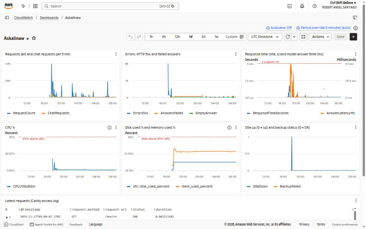
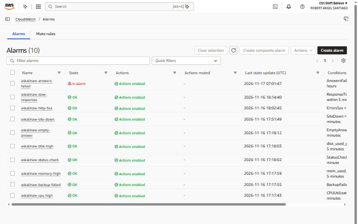
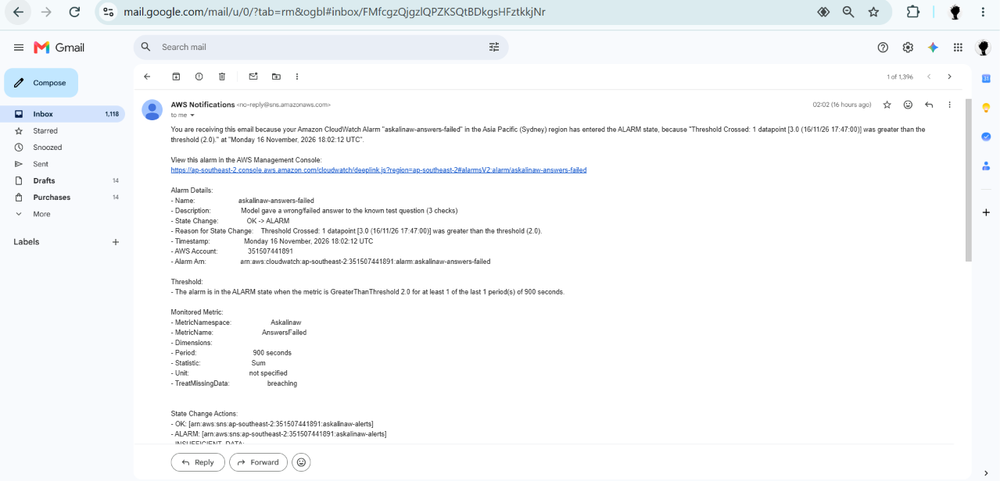
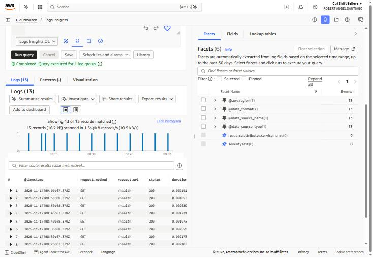
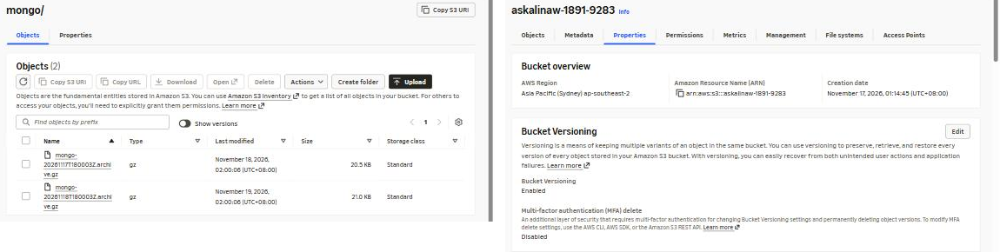
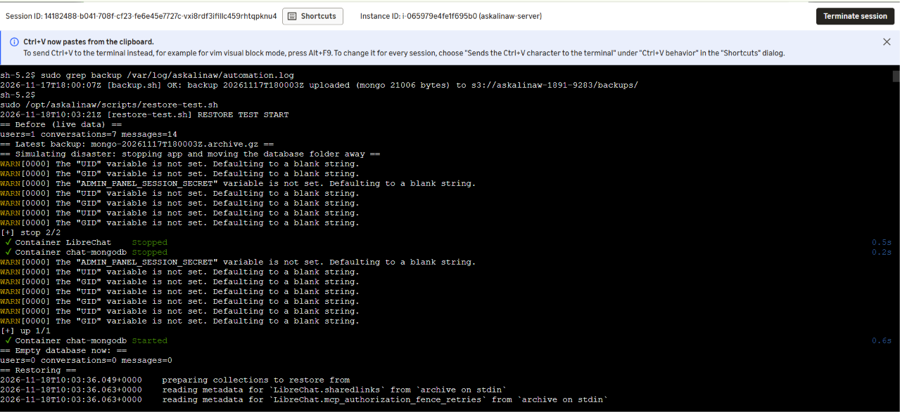
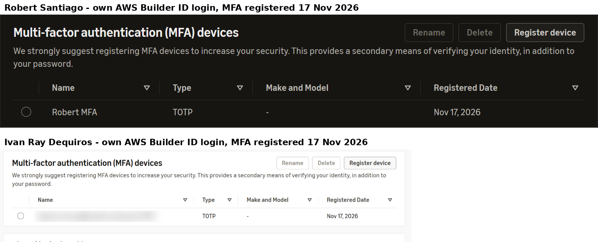
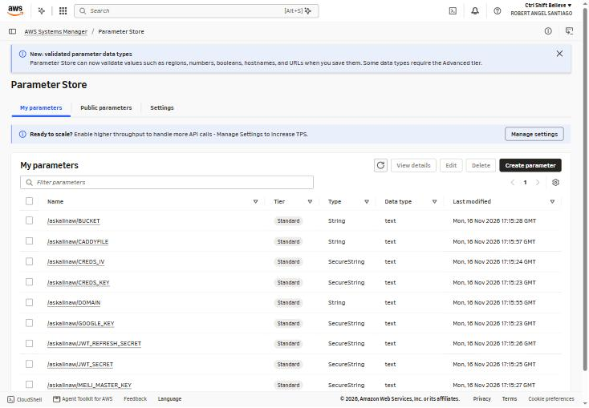
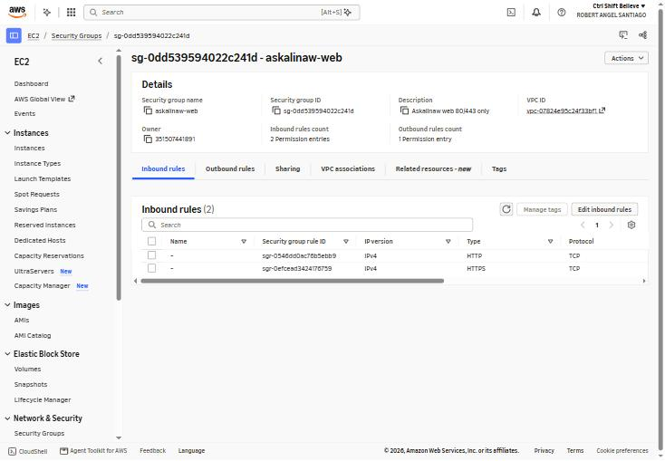

Monitoring, backup and restore, security
Monitoring

Why these thresholds: we used the brief's starter values. 85% CPU or disk leaves time to act before failure, and 3 seconds is about how long a person waits for an answer to start before they think it's broken.
| Alarm | Fires when | What we do |
|---|---|---|
| askalinaw-cpu-high | CPU > 85% for 10 min | Look for a stuck process or a loop |
| askalinaw-status-check | EC2 status check fails | Check / reboot the instance |
| askalinaw-disk-high | Disk > 85% | Disk-full runbook |
| askalinaw-memory-high | Memory > 90% for 5 min | Check containers with docker stats |
| askalinaw-http-5xx | Any 5xx response | Check app logs |
| askalinaw-slow-responses | Average response > 3 s over 5 min | Check model latency vs server load |
| askalinaw-site-down | Health check can't load the site twice | Check Caddy and containers |
| askalinaw-answers-failed | 3 wrong/failed answers in 15 min | System is up but not useful: check the Gemini key/quota and the handbook |
| askalinaw-empty-answer | Any empty answer | Content missing or model blocked |
| askalinaw-backup-failed | Nightly backup failed | Run backup.sh by hand, read its log |


Request logging: Caddy writes one JSON line per request (time, method, path, status, duration), shipped to
/askalinaw/access (14-day retention). LibreChat's own log, which includes the question text and errors, goes to
/askalinaw/app. The version that answered is the git commit, set as APP_VERSION at deploy. The health check
also records the model's answer time.

Backup and restore
What we would need to restore to get the system back:
- The MongoDB database: users, conversations, messages. Nightly
mongodumptos3://…/backups/mongo/. - The handbook content in S3: versioned bucket, so old versions can be recovered.
- Uploaded files in S3: same versioned bucket.
- Configuration:
librechat.yamland the compose override, backed up nightly and also rebuilt from git. - Secrets: in Parameter Store, which is outside the server, so they survive losing it.
- The server itself: rebuilt by
infra/01-create-aws.shplusinfra/02-server-setup.sh.
We run MongoDB in a container, not RDS, so the brief's option is "a scheduled dump to S3 kept at least 7 days". Ours are kept 14.


RPO and RTO. We could lose up to 24 hours of conversations, because backups run nightly. Measured: getting the database back from S3 took FILL-IN seconds; rebuilding the whole server from scratch and restoring would take about FILL-IN minutes.
Security
| Problem at baseline | What we did | Risk it addresses |
|---|---|---|
| Shared/unprotected console logins | Each of us has our own IAM user with MFA | A stolen password alone can't get into the account, and we can tell who did what. |
| Keys in a plain .env file | All secrets in Parameter Store (SecureString), written to an .env with chmod 600 on the server at start-up; git history checked | Keys can't leak through GitHub, screenshots or a copied folder. |
| SSH open to the internet | No port 22, no key pair; shell through Session Manager | Removes the most-scanned door on the internet. |
| Database reachable? | MongoDB is only on Docker's internal network; security group allows 80/443 only | Nobody outside can talk to the database. |
| Server with broad permissions | EC2 role can read only its own bucket and /askalinaw/* parameters, and write only its own metrics | If the server is hacked, the damage stays inside our project. |
| No HTTPS | Caddy + Let's Encrypt | Passwords and chats are encrypted in transit. |
| No audit trail | CloudTrail event history | We can see who changed what, and when. |
| Unencrypted storage | Encrypted EBS volume; S3 default encryption; public access blocked | A lost disk or snapshot can't be read. |
| Personal data to a third party | All data invented; prompt tells the assistant not to ask for personal info | Nothing personal reaches Google. |
| Gemini key scope | Key restricted to the Generative Language API in Google AI Studio, deleted at end of term | A leaked key can't be used for other Google services. |


